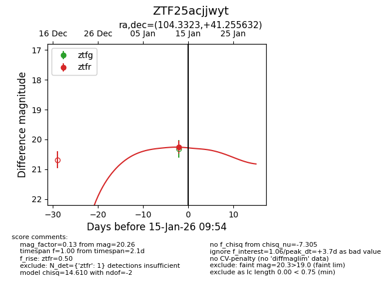
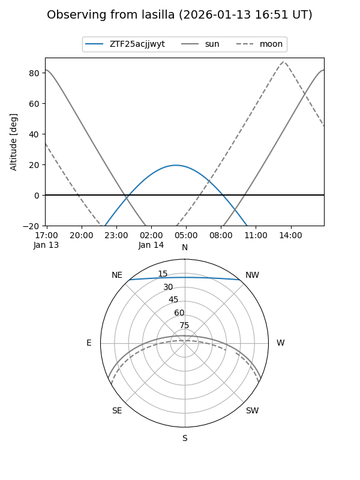
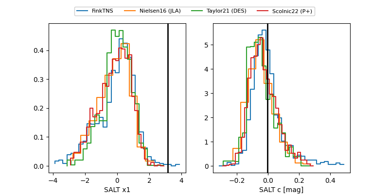

ZTF25acjjwyt
Target ZTF25acjjwyt at 2026-01-13 09:50
Aliases and brokers:
FINK: link
Lasair: link
ALeRCE: link
alt names
ZTF25acjjwyt (ztf,fink_ztf)
Coordinates:
equatorial (ra, dec) = 104.3323,+41.25563
equatorial (HMS+DMS) = 06:57:19.76,+41:15:20.28
galactic (l, b) = (175.3649,+18.53489)
Flags:
Photometry:
last ztfr=20.26
1 ztfr detections
Lightcurve

Visibility


Additional plots
